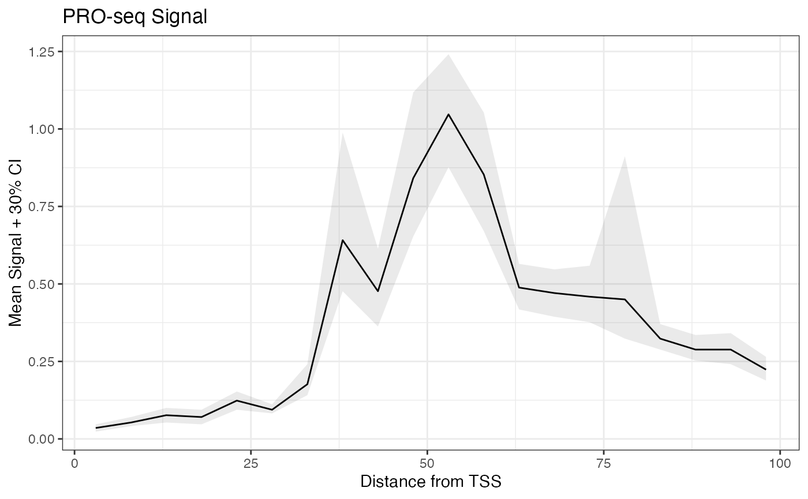

Profile Plots & Bootstrapping
Source:vignettes/ProfilePlotsAndBootstrapping.Rmd
ProfilePlotsAndBootstrapping.RmdConventional Profiles
As an example, we’ll plot PRO-seq signal in promoter-proximal regions by calculating the mean signal intensity at each base in the first 100 bases of a transcript.
First, calculate signal at each base for all promoter-proximal regions:
library(BRGenomics)
data("PROseq")
data("txs_dm6_chr4")
txs_pr <- promoters(txs_dm6_chr4, 0, 100)
countmatrix_pr <- getCountsByPositions(PROseq, txs_pr, ncores = 1)
dim(countmatrix_pr)
## [1] 339 100
dim(countmatrix_pr) == c(length(txs_pr), unique(width(txs_pr)))
## [1] TRUE TRUEFor each position (each column of the matrix), calculate the mean, and plot:
plot(x = 1:ncol(countmatrix_pr),
y = colMeans(countmatrix_pr),
type = "l",
xlab = "Distance to TSS (bp)",
ylab = "Mean PRO-seq Reads")
Drawbacks
One drawback of using the arithmetic mean is that means are not robust to outliers. In other words, the mean signal at any position is liable to be determined by a small number of highly influential points. This is especially problematic for high dynamic range data like PRO-seq.
It’s common to see this issue addressed through the use medians/quantiles in place of arithmetic means. However, observe what happens as we plot the median signal across our gene list using several different gene-filtering thresholds:
plot_meds <- function(sig_thresh) {
idx <- which(rowSums(countmatrix_pr) > sig_thresh)
plot(x = 1:ncol(countmatrix_pr),
y = apply(countmatrix_pr[idx, ], 2, median),
type = "l",
main = sprintf("Regions with >%s reads", sig_thresh),
xlab = "Distance to TSS (bp)",
ylab = "Median PRO-seq Reads")
}
par(mfrow = c(3, 2))
for (i in c(0, 30*2^(0:4))) {
plot_meds(i)
}
The paucity of transcription on Drosophila chromosome 4 makes this a somewhat extreme example, and you might find that the above situation is a non-issue for your data. However, it’s important to keep in mind how unexpressed genes can affect the median. A common rule of thumb is that a given cell is only apt to express around half of its genes; if that holds true, the median of an unfiltered genelist will be close to zero, and could be insensitive to changes occurring at expressed genes.
The Rationale for Bootstrapping
A robust alternative to plotting mean or median signal profiles is to plot bootstrapped mean signal profiles, known as metaprofile plots or metaplots.
To bootstrap the mean signal by position, a small number of genes are randomly sampled from a genelist, and the mean signal at each position is calculated for that group of genes. This process of randomly sampling genes and calculating mean signals is repeated over many iterations, and the final bootstrapped mean for each position is the median of the sampled means.
One feature of bootstrapping is that it is robust to outliers. But more than that, the a bootstrapped mean provides an expectation for what the mean signal would be for any arbitrary group of genes, and associated with that expectation is a measure of uncertainty. By taking quantiles of the sub-sampled means other than the median (the expected value), we can estimate the extent to which the mean varies across arbitrary groups of genes.
For example, the 75th percentile of the sub-sampled means is a number for which, 25% of the time, we calculated a higher mean. Similarly, a 90% confidence interval about the bootstrapped mean encompasses all values between the 5th and 95th percentiles of the sub-sampled means.
Generating and Plotting Metaprofiles
We can use the metaSubsample() function to bootstrap mean values by position for a genelist. The function accepts the same arguments as getCountsByPositions(), in addition to other arguments related to the bootstrapping.
By default, 10% of the genelist is randomly sampled 1000 times, and confidence bands are returned for the 12.5th and 87.5th percentiles (i.e. a 75% confidence interval).
Given the small size our dataset, we’ll reduce this to a 30% confidence interval, and we’ll additionally use 5 bp bins:
bootmeans.df <- metaSubsample(PROseq, txs_pr, binsize = 5,
lower = 0.35, upper = 0.65, ncores = 1)
head(bootmeans.df)## x mean lower upper sample.name
## 1 3 0.03529412 0.02735294 0.04705882 PROseq
## 2 8 0.05294118 0.04117647 0.06470588 PROseq
## 3 13 0.07647059 0.05294118 0.09411765 PROseq
## 4 18 0.06470588 0.04705882 0.08823529 PROseq
## 5 23 0.11764706 0.09411765 0.15294118 PROseq
## 6 28 0.09411765 0.08235294 0.10588235 PROseqA dataframe is returned for plotting, and notice how the x-values have been automatically adjusted to be the center of the bins.
Below, we show how to plot the confidence bands using base R plotting, as well as ggplot2.
plot(mean ~ x, data = bootmeans.df, type = "l",
main = "PRO-seq Signal", ylim = c(0, 1.4),
xlab = "Distance from TSS",
ylab = "Mean Signal + 30% CI")
# draw a polygon to add confidence bands,
# and use adjustcolor() to add transparency
polygon(c(bootmeans.df$x, rev(bootmeans.df$x)),
c(bootmeans.df$lower, rev(bootmeans.df$upper)),
col = adjustcolor("black", 0.1), border = FALSE)## Loading required package: ggplot2## Warning: package 'ggplot2' was built under R version 4.1.2
ggplot(bootmeans.df, aes(x, mean)) +
geom_line() +
geom_ribbon(aes(x, ymin = lower, ymax = upper),
alpha = 0.1) +
labs(title = "PRO-seq Signal",
x = "Distance from TSS",
y = "Mean Signal + 30% CI") +
theme_bw()
Example: Comparative Metaplots
Like other functions in BRGenomics, we can pass a list of GRanges to metaSubsample(), and the output is conveniently combined for plotting.
# make 3 datasets
ps_list <- list(ps1 = PROseq[seq(1, length(PROseq), 3)],
ps2 = PROseq[seq(2, length(PROseq), 3)],
ps3 = PROseq[seq(3, length(PROseq), 3)])
bm_list.df <- metaSubsample(ps_list, txs_pr, binsize = 5,
lower = 0.35, upper = 0.65, ncores = 1)
head(bm_list.df)## x mean lower upper sample.name
## 1 3 0.01176471 0.005882353 0.01764706 ps1
## 2 8 0.01764706 0.011764706 0.02352941 ps1
## 3 13 0.01764706 0.011764706 0.02352941 ps1
## 4 18 0.04117647 0.023529412 0.05294118 ps1
## 5 23 0.03529412 0.023529412 0.04705882 ps1
## 6 28 0.02941176 0.023529412 0.03529412 ps1
require(ggplot2)
ggplot(bm_list.df, aes(x, mean, color = sample.name)) +
geom_line() +
geom_ribbon(aes(x, ymin = lower, ymax = upper,
color = NULL, fill = sample.name),
alpha = 0.2) +
labs(title = "PRO-seq Signal",
x = "Distance from TSS",
y = "Mean Signal + 30% CI") +
theme_bw()Bear in mind that the above confidence intervals are ignoring 70% of the sub-sampling experiments, which is excessive. More reasonable parameters would reveal how lacking this data is, i.e. how un-confident we are that there is a robust difference in the mean signal at various positions.